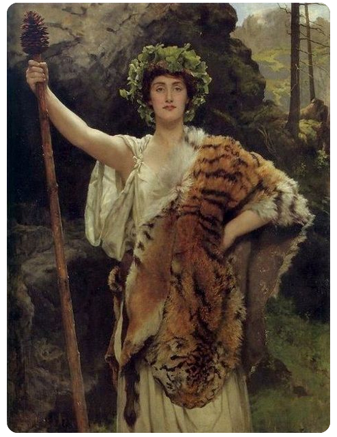

In Daoism, Jing is a term representing primal energy, or the body we are given at birth. Qi is breath acquired energy. Shen is human spirit. They are referred to as the 3 jewels. Our animal friends, as with most religious or spiritual traditions, are used as symbols for the spiritual Pokemon of the psyche. Tiger's place within the 3 jewels framework would seem to be 'Jing' and 'Qi' while Dragon might be 'Shen'. Tiger seemingly fits the western 'Mary' paradigm. It is yin encompassing yang or female/passive energy. Dragon is male and yang encompassing yin, seemingly 'Christ' spiritual nature. Yin is associated with fire as Yang is with water. These are two separate systems of philosophy that are not referencing identical concepts, but similar ones in my view. Male and Female are referenced below not as gender categories, but energy archetypes.
Emasculating Culture; Cymbals of the Times
Tiger skins were donned by female Maenads, adherents to Bacchic mysteries. Known as the 'raving ones', these women worshipped through banging cymbals, drinking wine, and going into ecstatic frenzy. In the Zohar, wine is associated with Geburah, or the left side of Judgement, which is also considered Female or passive. The Male side, Gedulah, ideally balances Judgement, which, for the sake of explorations in synchronicity, the male is potent but not acting in Yin or in Judgement. Judgement is constricting to action but necessary for new action. New births, if you will. The west typically associates Dragons with demonic or negative forces. The east has attached a different dominant symbolism to these creatures. It doesn't separate the divine's more mysterious Male forces, Male embracing the Feminine, from its powerful Male function, the action or display of Judgement. However, the western tradition hasn't always feared it's mystery symbols. Many European coats-of-arms display a dragon as a symbol of valour or power. Feminine power makes the Male truly more powerful and wise. Although this symbolism could be ripe for gender studies it is more useful for psychological introspection. Do my thoughts and actions balance? Am I putting right intent into what I do each day? Hardly. The Tiger and Dragon are in, but playing poker. Not copulating.Constricting the Restrictrix
The bible introduces us to Marys of different castes. Mary is mother of Christ, Mary is virgin, and Mary Magdalene is a whore. Tiger creates with Dragon. Mary provides light to the world by giving birth to Christ. Western religion is staunchly against the Feminine in its creative yet restrictive function; a most potent, male-like, powerful function. This restriction of the female to celibacy as the ideal might have enforced all sorts of repression and psychological trauma in regards to spirituality and especially sexuality in the west. It is strange to think that there once were temples in Norway similar to those in Japan, where statues of Loki stood, with an erect penis. The modern mind can digest these types of religions images in foreign culture, but there has never been a portrayal of Mary in coitus with G-d or Gabriel. Her conception is always protrayed as a revelation made physical, which is meaningful enough, but still leaves so much open for interpretation. We are generally more comfortable in acknowledging the Whore than the Mother. We are not acknowledging the Dragon when Tiger is constricted to mother, virgin, or whore, without a mate. Without her true Self. Tigers and Ivy symbols of Bacchic mysteries.
What's in It For Me?
These two animals are 2 of the 4 mysterious animals. They participate in a spiritual life-giving process, (a 'second birth'), said to take place within the individual, who has both Male and Female energy. Genetics also operate on an X/Y chromosome binary; we inherit a life-long testament to the Male-Female communion within our genes. This regenerative process can take place in the individual devoid of actual Male-Female sexual interaction. Some ancient systems attempting this regeneration believe this process is hyper-throttled through sexual interaction. Evidence is scattered throughout history. One example being the Bacchic mysteries, which incorporated 'orgia'. Yep. Mountain orgies. These are beyond the scope of this entry and a little controversial to boot. One can read and consider for themselves here. These rites incorporate this ancient eastern concept, however altered they may have became. While the individual is not divorced from their genetic or psychological reality, by the sheer fact of living through it each day, it is possible to live with our reality in a way empowered by symbol and meaning, where love of Self and others takes on a new vital importance. We're not forcing anything, we're creating conditions for powerful self-realization and elimination of duality and 'who?'ality when we let these two powerful creatures act in unison"Although exhibiting apparently the features of an Eastern origin, they were evidently copied from the rites of Isis in Egypt, an idea of which, more or less correct, may be found in The Metamorphoses of Apuleius and The Epicurean by Thomas Moore."